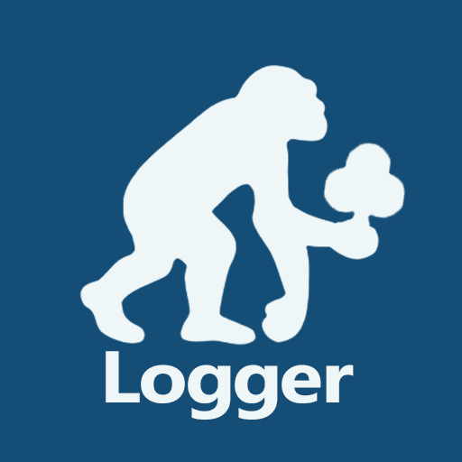

Sapiens Poker Logger
試作
PWA
OFFLINE
FREE
ポーカーを打つためだけのキーボードです。数字とアクション（b / r / c / f / x / ai）、カード（A〜K と ♠♣♥♦）が並んでいて、卓に着いたまま片手で1ハンドを打てます。
同じようなアプリは他にもあります。自分に合うものを探しているうちに、いっそ作ってみるかと手を動かした試作です。正直なところ、作った本人もいまは使っていません。動くものは置いてあるので、よければどうぞ。
ポーカー専用キーボード
片手で1ハンド速記
収支・時間を自動集計
オフライン完全対応